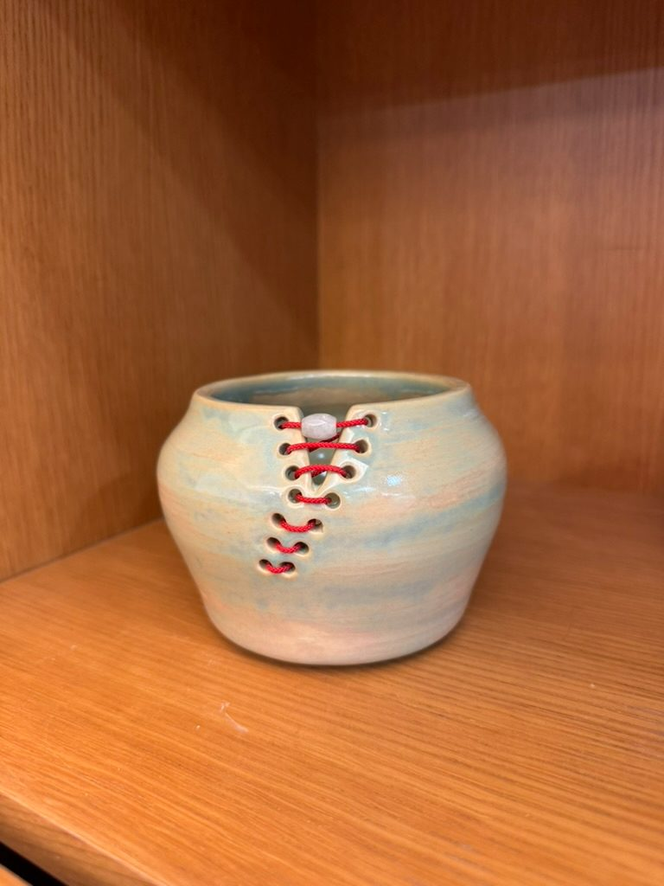
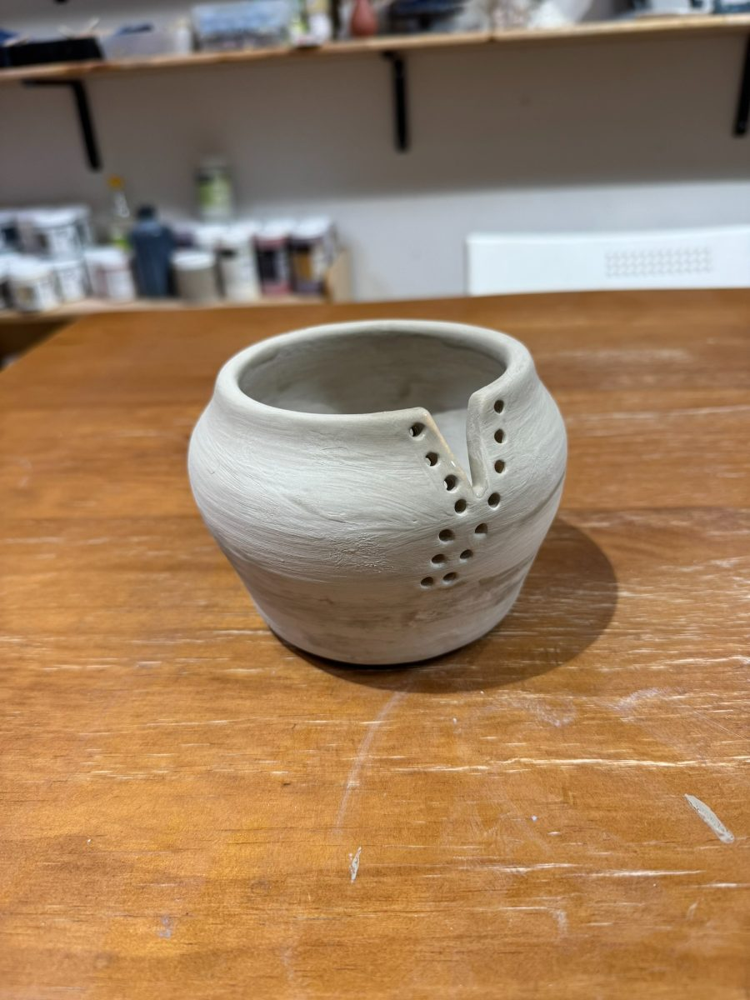
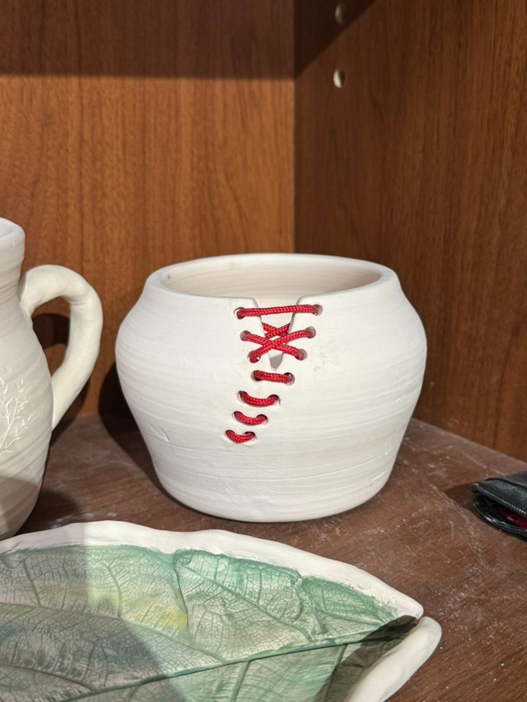
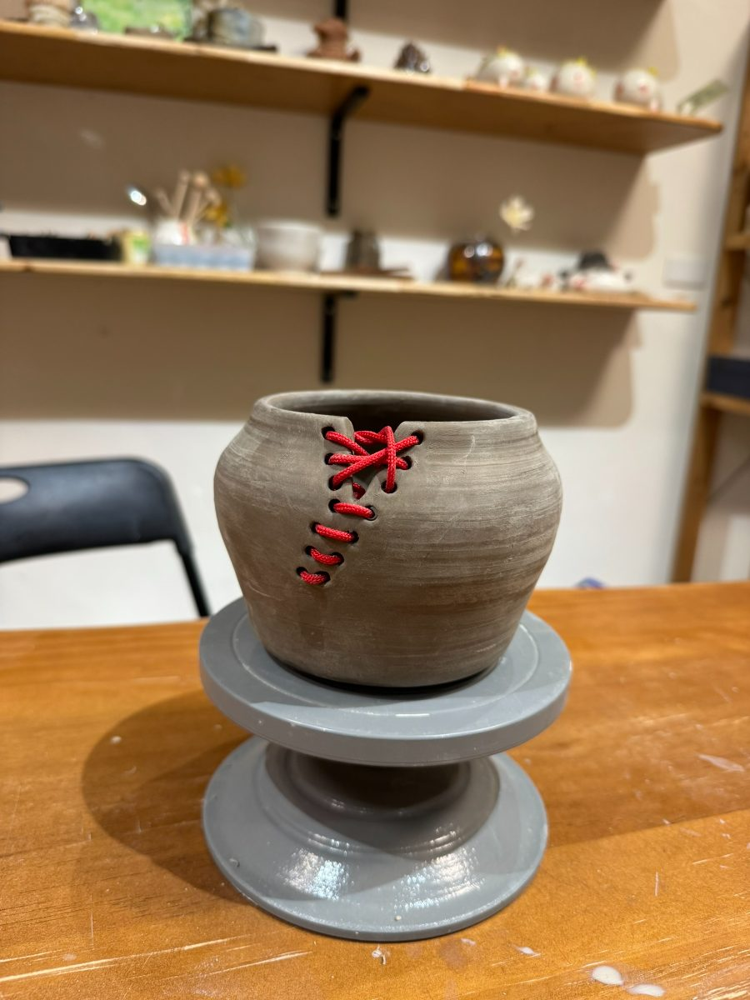
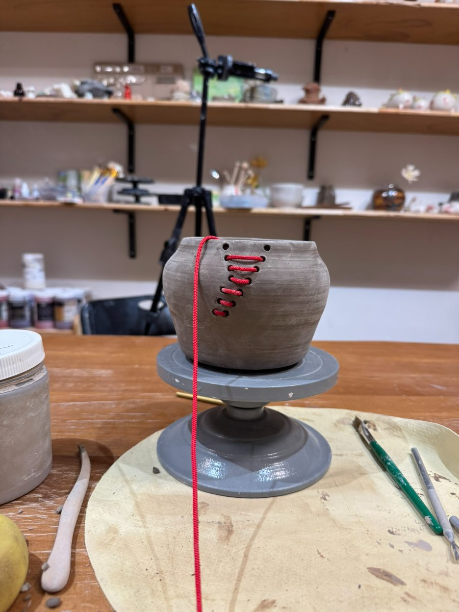
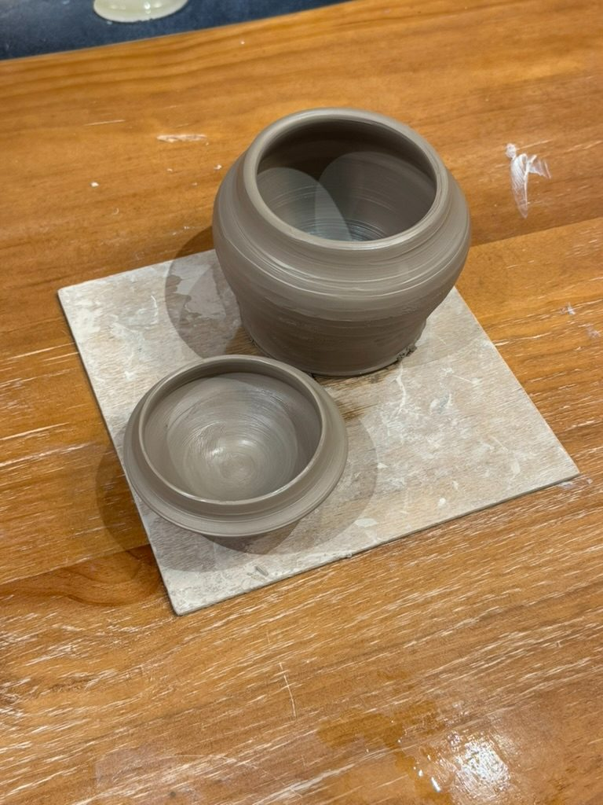

The beginning
It starts with a block of earth, still cold from the studio shelf. Nothing about it suggests what it will become.
Form
Pinching, rolling, coiling. The silhouette appears before the details do. Hands work by feel as much as intention.
Structure
Walls smoothed and thinned. Some changes are deliberate; others are accidents kept.
Carving
Detail added by subtraction. A loop tool traces the pattern — careful, then less careful, then careful again.
Drying
The piece rests. Clay needs time to stiffen before it can go into the kiln. This part cannot be rushed.
Color
After bisque firing, glaze is painted on. The color looks nothing like the finished surface — it reveals itself only in the fire.
Qipao (jade)
Six stages, several weeks. This is what was always inside the clay.
NTD 2,650 · Available